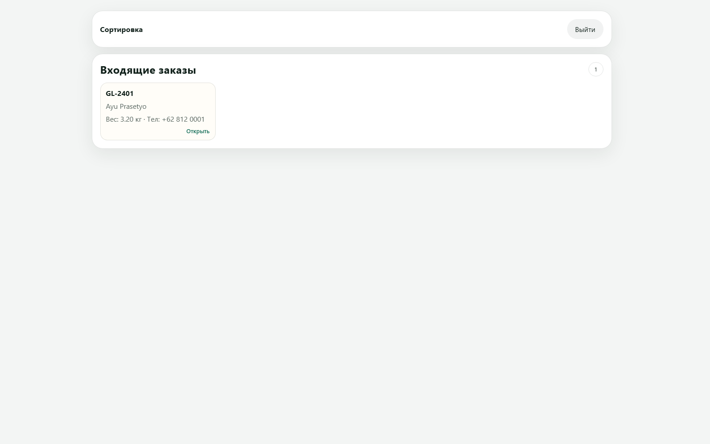
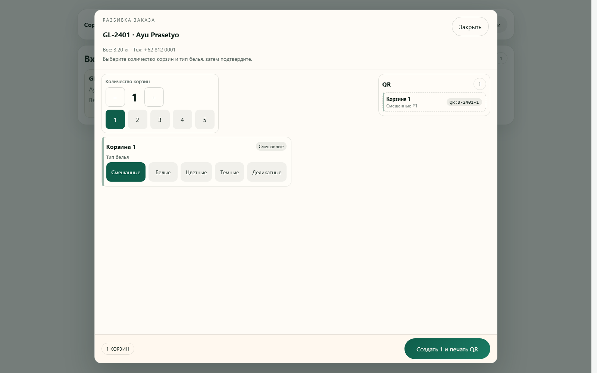
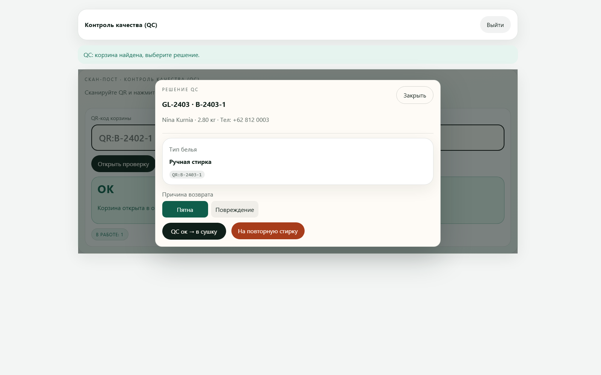
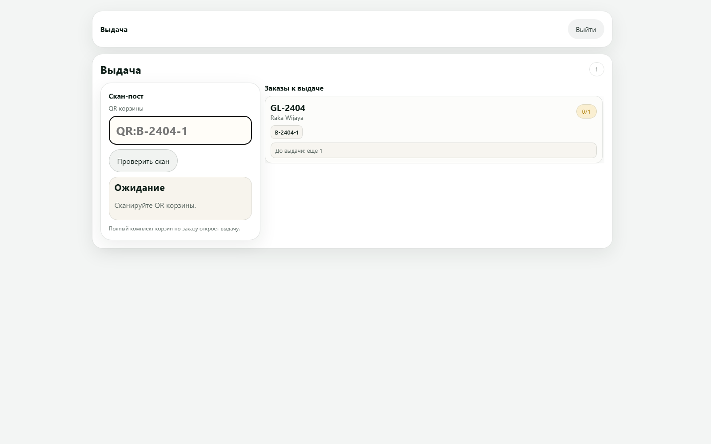
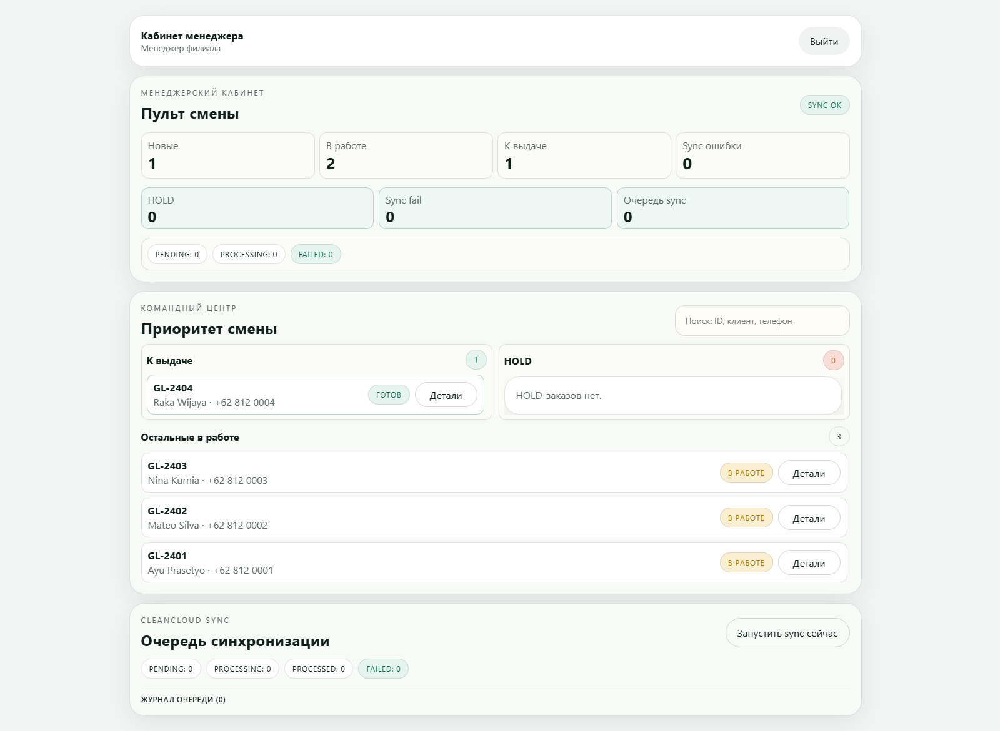
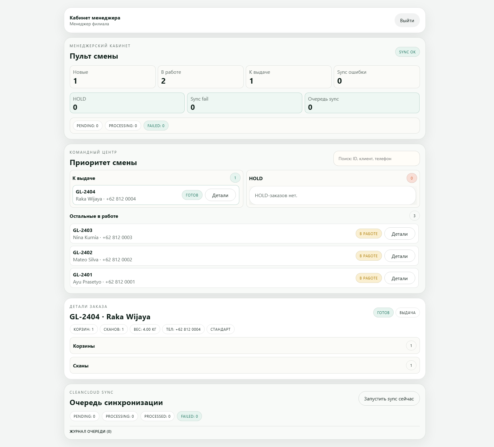

Green Lab · Internal Product
Green Lab Flow OS
Операционная система прачечной: сортировка, QR-корзины, QC-контроль, выдача и синхронизация с CleanCloud.
MVP готов к пилоту
RBAC по ролям
SQLite + Backup/Restore
Sync queue + retry/fail
Задача бизнеса
Что закрывает система
- Убрать ручной хаос на станциях и связать этапы в единый поток.
- Разделить доступ по ролям и дать каждому сотруднику только нужный экран.
- Фиксировать движение корзин по QR и минимизировать ошибки на смене.
- Оставить CleanCloud как внешнюю POS/CRM, а цеховой workflow вести в нашей системе.
Технологический стек
Что под капотом
- Backend: Node.js (HTTP server без тяжёлого фреймворка), модульная архитектура routes/services.
- DB: SQLite (WAL), отдельные таблицы заказов, корзин, сканов, sync_queue, webhook_events.
- Frontend: Vanilla JS (разделено на state/api/actions/render).
- Security: роли, ограничение станций, hashed passwords, закрытые менеджерские endpoint’ы.
- Ops: health endpoint, backup/restore, log rotation, мониторинг порогов очереди sync.
Node.js 22
HTTP JSON API
RBAC
Audit trail
End-to-end логика
Как заказ проходит систему
1. ПриемЗаказ создан в CleanCloud
2. СортировкаРазбивка на корзины + QR
3. СтиркаСкан перевёл корзину дальше
4. QCОК в сушку / проблема
5. СушкаСкан этапа
6. ГлажкаСкан этапа
7. ВыдачаПолный комплект → подтверждение
Пятна → повторная стирка
Повреждение → HOLD заказа + решение менеджера
Интерфейс сотрудника
Сортировка: входящие заказы

Интерфейс сотрудника
Сортировка: разбиение на корзины

Критический контроль
QC: явное решение по корзине

Финишный этап
Выдача: подтверждение только при полном комплекте

Пульт управления
Менеджерский кабинет

Прозрачность
Детали заказа и аудит

Интеграция с CleanCloud
Что уже работает
- Связка заказа с CleanCloud order ID.
- Обновление статуса в CleanCloud через очередь синка (retry/fail + ручной запуск).
- Входящий webhook-контур с дедупликацией событий (опционально включается на проде).
- Обогащение заказа: вес/телефон/email/имя по запросу из CleanCloud.
Готовность к запуску
Что сделано для прод-режима
- Роли и права доступа по станциям.
- Хэширование паролей, менеджерские endpoint’ы закрыты.
- Healthcheck:
/healthz. - Операционный контур: backup SQLite, restore, ротация логов, мониторинг sync.
- Тестовый прогон workflow end-to-end подтверждён.
Режим пилота: готов
Автоимпорт заказов: включать после согласования фильтров
Следующий шаг
План закрытия до full production
- Утвердить финальный маппинг статусов CleanCloud ↔ Flow OS.
- Зафиксировать регламент физической маркировки пакетов на приемке (anti-mix).
- Развернуть на постоянном VPS (домен + HTTPS + мониторинг).
- Провести UAT на точке: смена с реальными сотрудниками и сканерами.